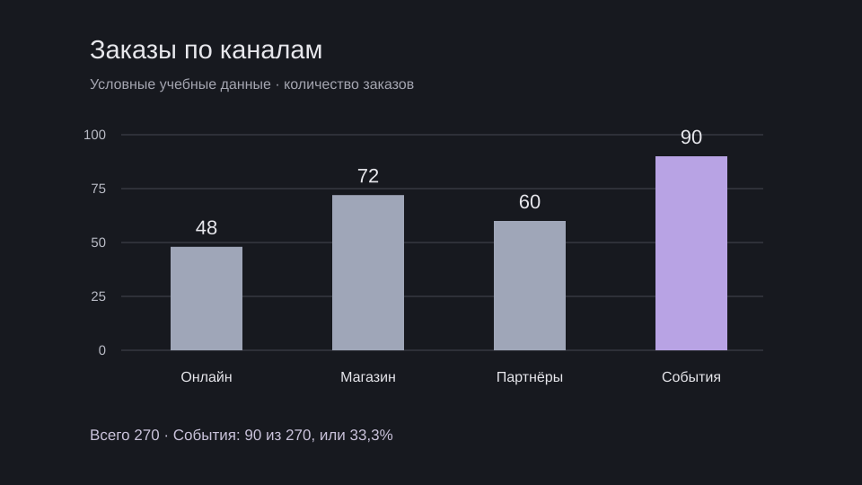

Инфографика в моушн-дизайне
Инфографика помогает увидеть отношения, которые трудно удержать в тексте: сравнить величины, проследить изменение, понять устройство процесса или найти объект на карте. В моушн-дизайне к форме, цвету и положению добавляется время. Порядок появления элементов становится частью объяснения.
Задача состоит в том, чтобы зритель понял информацию и смог соотнести её с источником. Для этого важны и визуальное решение, и корректность данных, и характер движения. Диаграмма с красивым появлением может искажать смысл, а точный график может остаться непонятным, если исчезает раньше, чем его успевают прочитать.
Сначала рассмотрим теорию: выбор формы, визуальное кодирование, масштаб и смысл анимации. Затем последовательно соберём несколько конструкций в After Effects: диаграмму с общим контроллером появления, числовые подписи, график, круговой показатель и схему процесса. Для практики используются условные данные, а готовые работы авторов служат отдельными примерами.
Теория: что относится к инфографике
Визуализация данных связывает значения с наблюдаемыми признаками: длиной столбца, положением точки, площадью круга или насыщенностью цвета. Схема показывает устройство, отношения и последовательность. Инфографика может объединять графики, схемы, подписи, иллюстрации и поясняющий текст в одно высказывание.
Не каждый движущийся столбец является визуализацией данных. Если его высота выбрана только ради композиции, он остаётся графическим образом. Это допустимо в условной иллюстрации, но рядом с числами зритель начинает ожидать количественного соответствия. Разделяйте измеренные данные, расчётные значения и художественную метафору.
В ролике о сервисе стрелки могут обозначать последовательность действий без количества передаваемых сообщений. В диаграмме потоков их ширина, напротив, может кодировать объём. Один и тот же визуальный элемент требует разного прочтения — эту договорённость нужно сделать понятной.

Один кадр — один главный вопрос
Начните с вопроса, на который отвечает графика. «Показать статистику» слишком широко. «Какой канал дал больше заказов?», «Как менялось значение за четыре периода?» и «На каком этапе процесс разветвляется?» уже задают направление выбора.
Затем сформулируйте вывод, который действительно следует из материала. Заголовок «Заказы по каналам» обозначает тему. Заголовок «Больше всего заказов пришло с мероприятий» предлагает конкретное прочтение — его нужно подтвердить данными. Если данных для вывода недостаточно, выразительный заголовок не заменит доказательства.
Для сложного объяснения разделите вопросы между состояниями кадра. Сначала покажите целое, затем сравнение, после — исключение или подробность. Когда на экране одновременно появляются таблица, карта, график и пять выносок, зрителю приходится самостоятельно угадывать порядок чтения.
Откуда берутся данные и что проверить
До анимации выясните, что означает одна строка таблицы. Это человек, событие, заказ, день, среднее по группе или итог за период? Уточните единицу измерения, временной интервал, территорию, способ расчёта и состав выборки. Значение без этих условий легко получает неверный смысл.
Проверьте пропуски, дубликаты, типы значений и одинаковые названия категорий. Пустая ячейка не равна нулю: ноль сообщает об отсутствии величины, а пропуск — об отсутствии наблюдения или записи. Значения «10», «10%» и «0,1» нельзя смешивать без понимания формата.
Для сравнения нужны совместимые условия. Общее число событий и число событий на человека отвечают на разные вопросы. Изменение периода, состава категорий или способа измерения может объяснять скачок, который иначе будет выглядеть как внезапный успех или провал.
Сохраните исходный файл, ссылку на публикацию и дату получения. В кадре или сопровождающем описании укажите источник, период и существенные ограничения. Если набор меняется, зафиксируйте версию, на которой построен конкретный экспорт. Это позволит проверить ролик позже.
Как выбирать форму представления
| Что нужно понять | Подходящая отправная точка | Что важно сохранить |
|---|---|---|
| Сравнить категории | Столбцы, горизонтальные полосы, точки на общей шкале. | Общий масштаб и читаемые названия. |
| Проследить изменение | Линия, последовательность состояний, временная шкала. | Порядок времени, интервалы и пропуски. |
| Показать части целого | Составная полоса, 100% stacked chart, круговая диаграмма. | Понятное целое и непротиворечивые доли. |
| Показать распределение | Гистограмма, точки, box plot. | Интервалы, объём наблюдений и разброс. |
| Показать связь величин | Диаграмма рассеяния. | Смысл обеих осей и единица наблюдения. |
| Показать место | Карта с точками, областями или маршрутами. | Масштаб, проекция и способ нормализации. |
| Объяснить последовательность | Блок-схема, временная шкала, схема потока. | Направление, условия переходов и смысл связей. |
Универсального самого выразительного графика нет. Отталкивайтесь от вопроса и структуры материала. Для дальнейшего выбора полезны каталоги типов: например, From Data to Viz связывает форму представления с устройством данных и отдельно рассматривает типичные ошибки.
 Сравнение категорий
Сравнение категорий Изменение во времени
Изменение во времени Части целого
Части целого Распределение
Распределение Связь величин
Связь величин Географическое положение
Географическое положениеСравнение: столбцы, полосы и точки
У столбчатой диаграммы значение передаётся длиной от общего основания. Поэтому одинаковому числу должен соответствовать одинаковый размер. Для положительных величин основание обычно находится на нуле; при отрицательных значениях нужен видимый ноль, от которого элементы расходятся в разные стороны.
Горизонтальные полосы удобны для длинных названий. Сортировка по величине помогает увидеть лидеров, а исходный смысловой порядок полезен, если категории образуют последовательность. Не сортируйте возрастные группы или этапы процесса только потому, что убывающие полосы выглядят аккуратнее.

Столбчатая диаграмма и гистограмма решают разные задачи. Первая сравнивает категории, вторая показывает распределение числовых наблюдений по интервалам. Высота гистограммы зависит от выбранных границ и ширины интервалов; это не просто набор соседних декоративных прямоугольников.
Изменение во времени
Линейный график помогает увидеть направление изменения, повороты и периоды относительной устойчивости. Ось времени должна сохранять порядок и выбранный принцип расстояний. Если наблюдения сделаны через неравные интервалы, равномерно расставленные точки могут исказить представление о скорости изменения.

Пропуск в данных нельзя автоматически изображать как достоверный участок непрерывной линии. Иногда допустима интерполяция, но её смысл нужно понимать и при необходимости обозначать. Красивый плавный изгиб может создавать значения между точками, которых нет в исходном материале.
Пример Gapminder важен как классическая постановка многомерного графика в движении. При анализе следите за подписью времени, значением осей и постоянством идентичности стран. Движущийся круг остаётся тем же объектом, хотя его координаты и размер меняются. Исторические значения ролика не следует подставлять в современный отчёт без обновления источника.
Доли, проценты и части целого
Перед круговой диаграммой определите, что считается целым. Категории должны относиться к одной базе и, если это разбиение, не пересекаться. В вопросе с несколькими вариантами ответа сумма процентов может превышать 100%; такой материал нельзя без пояснения превратить в круг, который изображает одно целое.

Для близких долей часто легче сравнивать длины полос, чем углы секторов. Круговая диаграмма удобнее при небольшом числе заметно различающихся частей. Вращение, перспектива и объём дополнительно усложняют сравнение, поэтому трёхмерный «пирог» редко помогает точному чтению.
Различайте процентное изменение и процентные пункты. Переход с 20% до 30% — увеличение на 10 процентных пунктов и одновременно на 50% относительно исходных 20%. Эти формулировки описывают разные отношения. Подпись должна уточнять, что именно посчитано.
Связи, распределение и масштаб наблюдений
На диаграмме рассеяния каждой точке соответствует наблюдение, а её положение кодирует две величины. Группа точек показывает структуру отношений, выбросы и неоднородность. Выделить одну красивую диагональ недостаточно: наличие связи само по себе не объясняет её причину.

Площадь круга и его радиус — разные способы кодирования. Если значение должно передаваться площадью, радиус пропорционален квадратному корню из значения. Увеличение радиуса вдвое увеличивает площадь в четыре раза. То же относится к масштабированию иконок сразу по двум осям: зритель может воспринимать площадь, хотя дизайнер управлял только линейным размером.
Не заменяйте распределение одним средним, если смысл находится в разбросе. Две группы с одинаковым средним могут иметь совершенно разное устройство. В ролике иногда достаточно показать несколько характерных наблюдений и диапазон, но выбранное упрощение должно соответствовать задаче.
Карты и пространственная инфографика
Карта нужна, когда положение действительно важно для вопроса. Для простого рейтинга регионов список полос может быть понятнее. На карте крупные территории занимают больше места и сильнее привлекают внимание, даже если интересующая величина у них небольшая.
Определите, что кодирует цвет: общее количество, долю, показатель на человека или отклонение от среднего. Эти варианты нельзя взаимозаменять. При смене масштаба сохраняйте опору: контур знакомой территории, подпись, выделенную область. Маршрутная линия должна иметь понятные начало, направление и конец.
В объяснении Vox преобразование карты делает видимым сам принцип искажения. Для моушн-дизайна это пример полезной трансформации: движение отвечает на вопрос, что произошло с геометрией. Декоративный облёт карты без связи с объяснением даёт гораздо меньше информации.
Схемы процессов и устройство систем
Блок-схема показывает действия, решения и переходы. Перед рисованием определите, чем является каждый узел и что означает стрелка: последовательность, зависимость, передачу информации или количественный поток. Не смешивайте эти значения незаметно внутри одного кадра.

Появление узла вслед за стрелкой помогает объяснить последовательность. Но если процессы идут параллельно, строго поочерёдная анимация может создать ложную причинность. Для развилки нужно показать условие, а для обратной связи — возвращение к предыдущему состоянию.
В объясняющих студийных роликах графические формы могут показывать участников, сообщения и связи. Это иной режим, чем статистическая диаграмма: размеры элементов не обязательно являются измерениями. Подписи и последовательность помогают установить смысл условных объектов.
Визуальная иерархия и язык графики
Распределите роли: заголовок задаёт вопрос или вывод, график показывает отношение, аннотация выделяет существенную точку, источник позволяет проверить материал. Сетка, поля и типографика должны помогать этим ролям. Слишком подробная легенда, вынесенная далеко от данных, заставляет постоянно переключать внимание.
Если один цвет обозначает категорию, сохраняйте его между сценами. Если цвет кодирует величину, нужна последовательная шкала и понятная легенда. Случайная радужная палитра может создать границы там, где показатель меняется непрерывно.
Не делайте цвет единственным различием. Дополняйте его прямыми подписями, формой маркера, типом линии или заметным выделением. Этот принцип соответствует рекомендации W3C о передаче смысла дополнительными визуальными средствами. Use of Color.
Solimar полезен как пример графической системы в объясняющем фильме. Формы, цвет и переходы создают связность между кадрами. Использовать подобную стилистику для числового отчёта можно только после определения того, какие признаки будут означать реальные значения.
Шкала и честность сравнения
Обрезанная шкала столбцов способна преувеличить различие. Если высоты начинаются с 90, значения 95 и 100 визуально превращаются в отношение 5 к 10, хотя сами величины отличаются гораздо меньше. Для сравнения длиной столбца сохраняйте корректное основание. Если нужно выделить небольшую разницу, рассмотрите точечную диаграмму или отдельно покажите отклонение. Нулевое основание столбцов и альтернативы: Datawrapper.
У линии задача другая: важны координаты и изменение, поэтому ось не обязана всегда начинаться с нуля. Но диапазон всё равно должен быть виден и осмыслен. Сравнение нескольких кадров с разными диапазонами требует особенно явного обозначения: одна и та же высота на экране может перестать означать одну и ту же величину.
Логарифмическая шкала показывает равные отношения равными расстояниями. Она полезна для величин разных порядков, но требует подписи и объяснения; ноль на обычной логарифмической оси не размещается. Выбирайте шкалу по устройству задачи, а не ради более эффектного наклона.
Что анимация может объяснить
Движение может последовательно раскрывать структуру, сохранять узнаваемость элемента при перестановке, выделять событие, показывать изменение состояния и связывать два способа представления. В каждом случае полезно назвать, какую работу выполняет переход.
Если категории сортируются, перемещайте столбец вместе с его подписью и цветом. Если одна группа распадается на подгруппы, покажите связь частей с исходным целым. Если сразу меняются тип графика, порядок, цвет и масштаб, проследить соответствие становится трудно.

В работе Jeffrey Heer и George Robertson рассматриваются переходы между статистическими графиками, включая разделение изменения на стадии. Это полезная исследовательская основа, но анимация не гарантирует понимание в любом случае: количество элементов, длительность и смысл перехода остаются частью проектирования. Animated Transitions in Statistical Data Graphics.
Время, внимание и числовая точность
Различайте появление графика и изменение данных во времени. В первом случае столбец вырастает до своего значения как способ представления. Во втором его высота должна соответствовать данным конкретного момента, а время обязано быть обозначено. Плавное появление числа от нуля не доказывает, что показатель действительно рос именно так.
Если движение кодирует реальную скорость, декоративное замедление может изменить восприятие процесса. При интерполяции между редкими наблюдениями обозначайте условность промежуточных состояний. Для вступительного появления допустим easing, но сравниваемые элементы должны получать согласованное правило.
Отскок высоты столбца выше целевого значения создаёт временно неверное количественное изображение. Особенно рискованно, если числовая подпись уже показывает финал. Выразительность можно перенести в непропорциональные данным элементы: появление заголовка, контур выделения или изменение прозрачности.
После сложного появления оставляйте устойчивое состояние для чтения. Голос может объяснять, куда смотреть, но не должен быть единственным носителем критичной информации. Проверяйте ролик без звука и на экране того размера, для которого он предназначен.
Как подготовить инфографический ролик
Сначала проверьте материал и сформулируйте вопрос. Затем выберите графическую форму, соберите статичный кадр и убедитесь, что отношение читается без анимации. После этого разложите объяснение на состояния: что уже известно зрителю, какой элемент добавляется и какой вывод становится доступен.
В аниматике достаточно простых форм и временных подписей. Уже здесь должны работать порядок чтения, время на сравнение и синхронизация с голосом. Декоративные переходы и подробная иллюстрация появляются после проверки логики.
Проверка проходит в двух направлениях. Редактор или специалист по теме проверяет значения и формулировки; дизайнер — кодирование, ясность и движение. Красивое превью и правильная исходная таблица не заменяют проверку того, что реально отображается в промежуточных и финальных кадрах.
Практика: один набор данных и законченная сцена
Соберём короткую сцену «Заказы по каналам». В ней появятся четыре столбца, синхронные числовые подписи и выделение наибольшего значения. Все числа ниже вымышлены и предназначены только для объяснения устройства графики.
| Канал | Условное число заказов | Доля от общего количества |
|---|---|---|
| Онлайн | 48 | 17,8% |
| Магазин | 72 | 26,7% |
| Партнёры | 60 | 22,2% |
| События | 90 | 33,3% |
| Всего | 270 | 100% |
Для столбцов будем использовать исходное количество, а доли пригодятся для кругового показателя. Проценты в таблице округлены только для отображения; геометрию нужно рассчитывать по исходным значениям. Максимум шкалы выберем равным 100 заказам, а высоту области построения — 420 пикселей.

Скачать orders.json · Скачать orders.csv. Это один и тот же условный набор в двух форматах.
Подготовка композиции After Effects
Создайте композицию 1920 × 1080 с выбранной частотой кадров, например 25 fps, длительностью 10 секунд. Сначала соберите статичное оформление: заголовок, источник, подписи категорий, основание и несколько делений шкалы. Для этой демонстрации ноль находится на Y = 700, а верх шкалы 100 — на Y = 280.
Создайте Null Object с именем CTRL. Добавьте два Slider Control и переименуйте эффекты: Progress и Axis Max. Progress будет управлять появлением от 0 до 100; Axis Max задаёт верхнее значение шкалы, в нашем примере 100.
Для первого столбца создайте Shape Layer BAR_01 с одним Rectangle Path и Fill, без Stroke. На сам слой добавьте Slider Control с именем Value и значением 48. В этой конструкции слой двумерный, Scale = [100, 100], Rotation = 0, родителя нет; трансформации группы шейпа остаются исходными. Эти условия важны для следующих выражений.
Разместите четыре столбца по X = 420, 720, 1020 и 1320, у всех Y = 700. В графике с длинными названиями можно вместо вертикальных столбцов выбрать горизонтальные полосы, но тогда изменятся формулы размеров, расположение подписей и направление основания.
Столбец растёт от общего основания
На Size внутри Rectangle Path поставьте выражение. Оно переводит числовое значение в высоту и умножает её на прогресс появления:
ctrl = thisComp.layer("CTRL");
v = effect("Value")(1);
axisMax = ctrl.effect("Axis Max")(1);
p = Math.max(0, Math.min(1, ctrl.effect("Progress")(1) / 100));
if (axisMax <= 0 || v < 0) {
throw new Error("Check Axis Max and Value");
}
h = 420 * v / axisMax * p;
[140, h]Ширина равна 140 пикселям. Число 420 — максимальная высота области, v — исходное значение, axisMax — максимум общей шкалы, p — прогресс от 0 до 1. Выражение рассчитано на неотрицательные значения: для отрицательных столбцов нужно отдельно спроектировать основание и направление роста.
Чтобы прямоугольник не рос симметрично из центра, на Anchor Point самого Shape Layer добавьте:
r = sourceRectAtTime(time, false);
[r.left + r.width / 2, r.top + r.height]Точка привязки оказывается внизу видимого прямоугольника. Поэтому Position слоя остаётся на общем основании, а верх поднимается. На слое не должно быть дополнительных фигур, расширяющих измеряемые габариты. Выражения используют стандартные средства слоёв и выражений AE; подробности методов можно сверить в справочнике выражений.
Продублируйте слой ещё три раза, задайте Value = 72, 60 и 90 и соответствующие позиции по X. Все столбцы используют один Axis Max. Если максимум шкалы меняется, нужно обновить и её деления; одного изменения высоты столбцов недостаточно.
Числа и подписи связаны с геометрией
Создайте точечный текстовый слой с центральным выравниванием абзаца для числа первого столбца. Для этого примера оставьте Anchor Point = [0, 0], Scale = [100, 100], Rotation = 0 и отсутствие родителя. На Source Text добавьте:
bar = thisComp.layer("BAR_01");
p = Math.max(0, Math.min(1,
thisComp.layer("CTRL").effect("Progress")(1) / 100));
Math.round(bar.effect("Value")(1) * p).toString()На Position этого текста поставьте:
bar = thisComp.layer("BAR_01");
h = bar.sourceRectAtTime(time, false).height;
[bar.transform.position[0], bar.transform.position[1] - h - 30]Число следует за верхом столбца, поскольку использует его фактическую высоту. Для остальных подписей поменяйте имя слоя на BAR_02, BAR_03 и BAR_04. Подписи категорий разместите отдельно под основанием: они не должны подниматься вместе с верхом.
Счётчик в этой сцене является частью появления диаграммы. Промежуточные числа не изображают историю поступления заказов. Если такая условность мешает содержанию, показывайте сразу итоговое число и анимируйте его прозрачность вместе с раскрытием столбца.
Анимация, проверка значений и смысловой акцент
Поставьте для Progress ключи 0 и 100, например на первой и второй секунде композиции. Можно смягчить начало и конец появления, сохранив одно правило для всех столбцов. Не добавляйте пружинящий выход высоты за пределы значения. После роста оставьте время на сравнение.
Проверьте контрольные состояния. При Progress = 0 высота равна нулю. При 50 первый столбец имеет высоту 100,8 пикселя. При 100 высоты должны быть 201,6; 302,4; 252 и 378 пикселей. Все основания остаются на Y = 700. Это позволяет найти ошибку до добавления стилизации.
После общего появления выделите «События» акцентным цветом, оставив остальные значения читаемыми. Можно добавить краткую аннотацию «90 из 270 заказов». Она соответствует условной таблице. Звуковой акцент и появление аннотации могут поддержать вывод, но не должны менять геометрию сравнения.
Если хотите переставить категории по величине, перемещайте вместе столбец, его число и название. Для такой версии удобно объединить элементы категории в отдельную композицию или общий управляемый блок. Оставьте промежуток между появлением и сортировкой, чтобы зритель успел понять соответствие.
Подключение JSON вместо ручного ввода
Ручной Value подходит для первого объяснения. Если данные регулярно меняются, вынесите их во внешний файл. JSON хранит именованные поля, числа, строки и массивы, поэтому позволяет вместе передать значения, единицы и контекст. Ниже структура файла orders.json:
{
"title": "Заказы по каналам",
"unit": "заказы",
"source": "Условные учебные данные",
"axisMax": 100,
"categories": [
{"id": "online", "label": "Онлайн", "orders": 48},
{"id": "store", "label": "Магазин", "orders": 72},
{"id": "partners", "label": "Партнёры", "orders": 60},
{"id": "events", "label": "События", "orders": 90}
]
}Импортируйте JSON в Project. На Value первого столбца вместо ручного числа можно поставить:
d = footage("orders.json").sourceData;
v = d.categories[0].orders;
if (typeof v !== "number" || !isFinite(v) || v < 0) {
throw new Error("Invalid orders value");
}
vУ следующих столбцов используются индексы 1, 2 и 3. На Source Text названия категории можно вернуть footage("orders.json").sourceData.categories[0].label, а на Axis Max — footage("orders.json").sourceData.axisMax. При изменении порядка строк индексы тоже изменят соответствия; для большой системы устойчивые id и поиск по ним надёжнее случайного номера.
JSON не строит график автоматически: он предоставляет значения, а правила геометрии и оформления остаются в проекте. После обновления файла проверьте, что AE прочитал актуальную версию; при необходимости перезагрузите footage. Имя в выражении относится к элементу Project, поэтому оно должно совпадать с импортированным источником.
CSV, обновление и передача проекта
CSV удобно получать из таблицы. Для практики файл содержит заголовки полей и четыре строки. Сохраните текст в UTF-8, проверьте разделитель и представление десятичных чисел. В JSON десятичный разделитель — точка; локальное оформление запятой лучше делать при выводе подписи.
id,label,orders
online,Онлайн,48
store,Магазин,72
partners,Партнёры,60
events,События,90AE поддерживает JSON, CSV и TSV для анимации данных. Для CSV можно открыть доступные Data-свойства и создать ссылку через pick whip на нужную ячейку, затем проверить её на известном значении. Так вы увидите фактический путь к данным в используемой версии, а не будете угадывать его по внешнему виду таблицы. Работа с данными в документации Adobe.
Для передачи и рендера важно сохранить зависимость от файла данных. Adobe отдельно рекомендует добавлять источник на Timeline при работе через Media Encoder или связи с Premiere; это также помогает включить его в Collect Files. После сборки откройте проект из передаваемой папки и проверьте короткий рендер. Пример работы с данными от Adobe.
Практика: раскрытие линейного графика
Для простой пробы возьмите четыре равноудалённых момента и условные значения 20, 35, 30 и 55. Сначала расставьте точки по общей шкале. При том же основании Y = 700, максимуме 100 и высоте области 420 координата Y вычисляется как 700 − 420 × значение / 100. Получатся 616, 553, 574 и 469.
Постройте открытый путь через эти точки, добавьте Stroke и уберите Fill. Для последовательного раскрытия используйте Trim Paths: End проходит от 0 до 100. Если линия обозначает интерполяцию между наблюдениями, прямые отрезки обычно яснее случайно сглаженной кривой. Сглаживание может добавить несуществующие максимумы и минимумы.
Trim Paths раскрывает длину пути, а не автоматически кодирует время по горизонтальной оси. Поэтому равномерное движение End не гарантирует равномерного движения по времени данных. Для точного временного проигрывания нужно связать положение указателя и видимую часть графика с той же временной координатой.
В ролике-представлении можно последовательно открыть линию, затем отметить важную точку и вывести пояснение. В визуализации реального изменения даты и значения должны быть синхронизированы. В обоих случаях проверьте, что область после последнего наблюдения не выглядит продолжением прогноза.
Практика: круговой показатель и доля
Покажем долю канала «События»: 90 / 270 × 100 = 33,333…%. Создайте Shape Layer с Ellipse Path, Stroke и без Fill. Добавьте Trim Paths. На End можно подать долю, умноженную на Progress / 100; полный фоновой круг обозначит 100%.
Для версии с JSON добавьте на CTRL Slider Control с именем Share. Он хранит вычисленную итоговую долю, а не анимацию. Выражение для Share:
d = footage("orders.json").sourceData;
total = 0;
for (i = 0; i < d.categories.length; i++) {
total += d.categories[i].orders;
}
if (total <= 0) {
throw new Error("Total must be greater than zero");
}
d.categories[3].orders / total * 100На End у Trim Paths поставьте:
ctrl = thisComp.layer("CTRL");
p = Math.max(0, Math.min(1, ctrl.effect("Progress")(1) / 100));
ctrl.effect("Share")(1) * pДля Source Text числовой подписи используйте ту же связь:
ctrl = thisComp.layer("CTRL");
p = Math.max(0, Math.min(1, ctrl.effect("Progress")(1) / 100));
share = ctrl.effect("Share")(1) * p;
share.toFixed(1).replace(".", ",") + "%"Здесь предполагается уже проверенный набор неотрицательных чисел. Нулевая общая сумма вызывает явную ошибку: в этом случае доля не определена. Округляется подпись, а геометрия сохраняет исходную точность.
Для нескольких секторов нужны накопленные границы: начало каждого сектора равно сумме предыдущих долей, конец — сумме с учётом текущей. Сначала проверьте, что итоговое количество больше нуля и категории действительно образуют целое. Промежутки между секторами, толщина линии и декоративные концы могут визуально менять восприятие долей.
Такой круговой показатель хорошо сообщает одну долю. Для точного сравнения четырёх близких долей вернитесь к полосам или столбцам. Выбор формы остаётся смысловым решением даже тогда, когда круг быстрее и приятнее анимировать.
Практика: анимированная схема процесса
Возьмём условную схему обработки заявки: получение → проверка → решение. При положительном результате заявка идёт в выполнение, при отрицательном — на уточнение. В статике сначала должны читаться узлы, направление и условие развилки.
- Соберите узлы. У каждого есть название, понятная форма и место в общей последовательности.
- Проведите связи. Направление должно читаться без движения; наконечники стрелок не должны теряться под блоками.
- Разделите состояния. Активный узел отличается не только цветом: можно добавить контур или подпись состояния.
- Анимируйте маршрут. Trim Paths раскрывает связь к следующему узлу; после достижения появляется или выделяется следующий этап.
- Покажите условия. На развилке укажите, почему выбирается ветка. Обратный путь должен возвращаться в нужный узел.
Бегущая точка по стрелке — условный маркер прохождения, если данные о времени обработки не заданы. Она не обязана изображать реальную скорость передачи информации. Если требуется показать задержки, задайте их отдельно и объясните временную шкалу.
Форматы, звук и доступность
На вертикальном экране длинный ряд категорий лучше перестроить, а не просто уменьшить. Можно перейти к горизонтальным полосам, разбить сравнение на несколько состояний или сократить второстепенные подписи. При этом между кадрами должны сохраняться шкала и смысл цвета.
Голос помогает вести внимание, но текст и графика должны поддерживать основную мысль без него. Субтитры не должны закрывать основание диаграммы или источник. Звуковые акценты могут обозначать появление вывода, однако одинаковый громкий звук на каждой цифре быстро превращается в шум.
Для веб-версии предусмотрите управление запуском и остановкой анимации и учитывайте предпочтение уменьшенного движения. Для видео оставляйте читаемые устойчивые состояния. Контраст, размер текста и различимость категорий нужно оценивать в конечном формате.
Проверка теории на готовом ролике
- Смысл. Понятен ли вопрос, на который отвечает каждый график или схема?
- Данные. Совпадают ли значения с выбранной версией источника, определены ли период и единицы?
- Геометрия. Соответствуют ли длины, площади, углы и координаты значениям?
- Шкала. Не меняется ли основание или диапазон незаметно для зрителя?
- Движение. Не создаёт ли оно ложные промежуточные значения, причинность или скорость?
- Идентичность. Остаются ли подписи, цвет и объект связанными при перестановке?
- Чтение. Есть ли время понять график, легенду и аннотацию?
- Повторное использование. Работает ли проект с новым числом, длинной подписью, нулём и пропуском?
Проверяйте начало, середину и конец перехода. Финальные 90 заказов могут быть правильными, а промежуточный столбец — временно изображать больше 100. Посмотрите ролик в нормальном темпе, на паузе и без звука. Эти проверки отвечают на разные вопросы.
Хорошая инфографика позволяет восстановить ход объяснения: что сравнивается, по какому правилу и к какому выводу это приводит. Анимация помогает пройти этот путь, сохраняя связь между изображением и информацией.